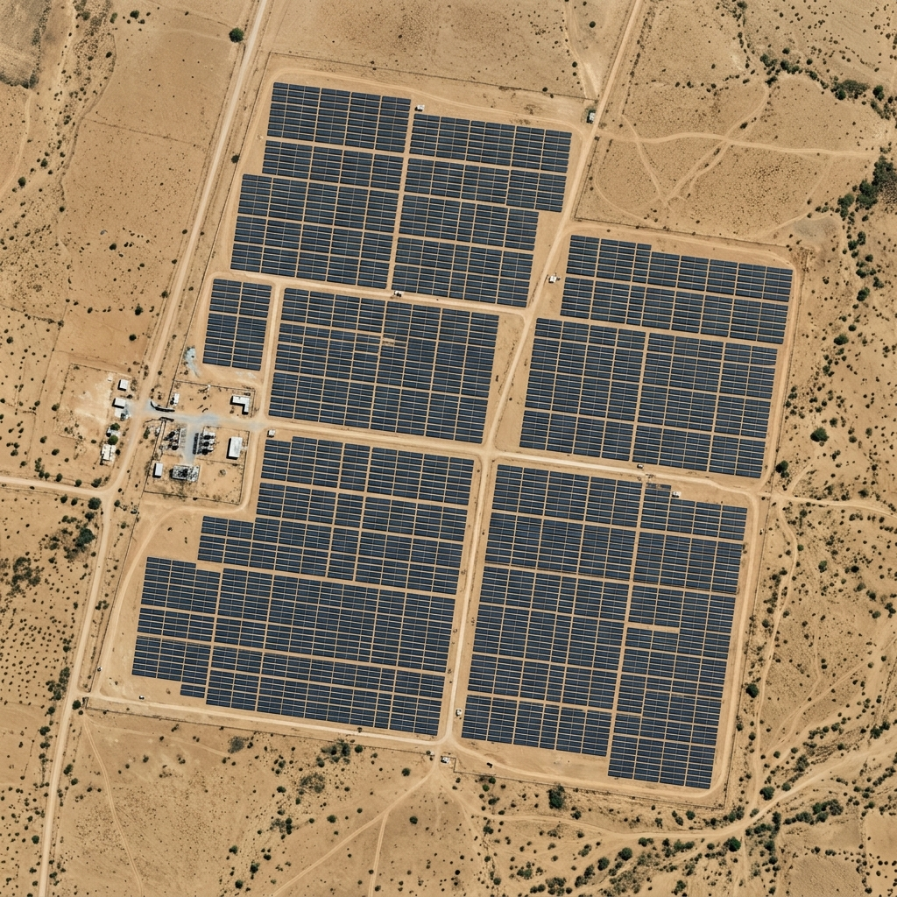
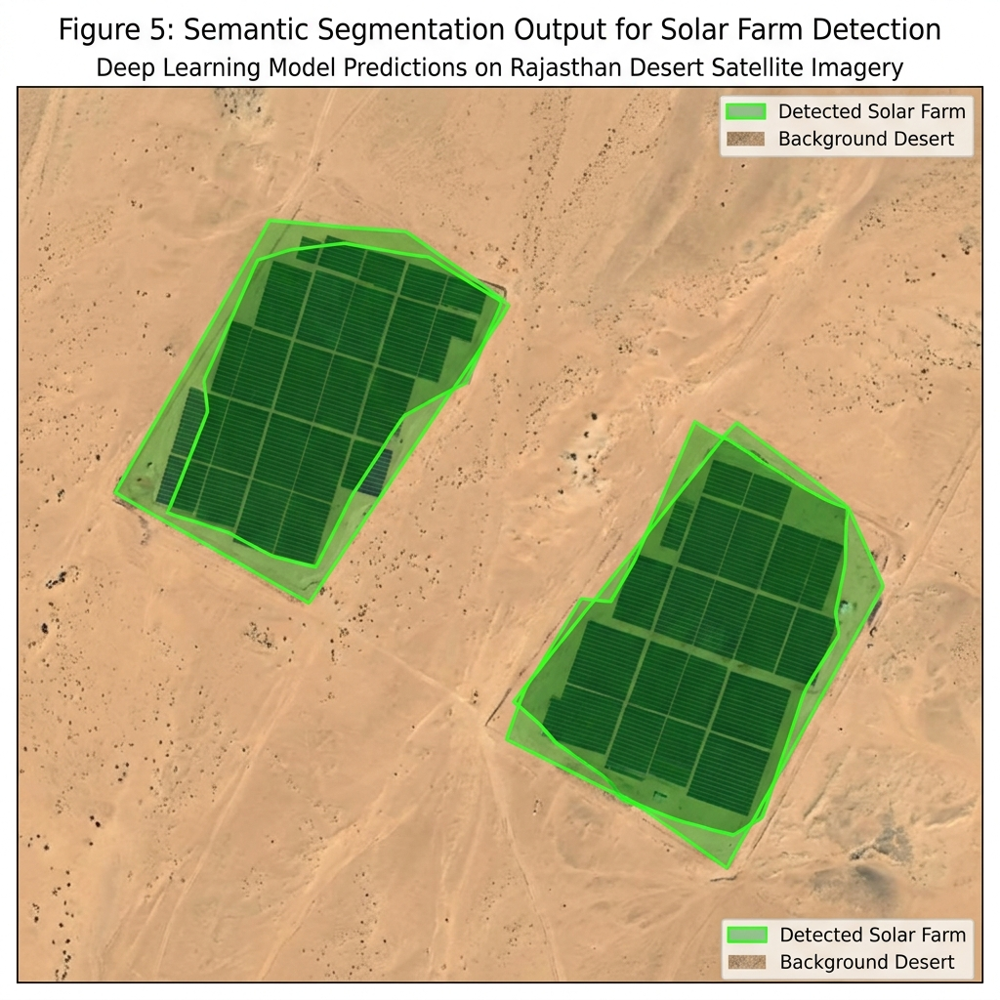

Mapping Solar Farms Across India Using Satellite Imagery and Deep Learning
Automated detection of utility-scale photovoltaic installations from Sentinel-2 multispectral imagery
📍 NRSC, Hyderabad🗓 May – July 2024🛰 Sentinel-2, 10 m resolution🤖 SegFormer-B5 semantic segmentation

Fig. 1 — Sentinel-2 true-colour composite (Band 4-3-2), Jaisalmer district, Rajasthan. Acquired June 2024. Annotations added manually during field validation.
About This Project
This project was developed during my summer internship at the National Remote Sensing Centre (NRSC), Hyderabad, under the guidance of my mentor from the Land Use and Land Cover division. The objective was to build an automated pipeline to detect and map utility-scale solar installations across India using freely available satellite data.
I used Sentinel-2 Level-2A imagery sourced from ESA's Copernicus Open Access Hub and trained a SegFormer-B5 transformer-based segmentation model on the Microsoft AI4Earth Solar Farm India dataset (Ortiz et al., 2022). Most of my ground-truthing and validation work focused on Rajasthan and Gujarat, which together account for nearly 60% of India's installed solar capacity.
The interactive map linked in the header shows the model's detections on a national scale, with popup metadata for each detected farm. This page documents the methodology, training setup, and key results from the internship period.
Student
Anandraj
Programme
B.Tech (Final Year)
Host Organisation
NRSC, Hyderabad
Period
May – July 2024
Guide
Scientist/Engineer, LULC Division
Methodology
Data Collection
Downloaded cloud-free Sentinel-2 L2A tiles (10 m resolution) covering Rajasthan, Gujarat, Tamil Nadu, Karnataka, and Andhra Pradesh from the Copernicus Hub. Selected scenes from the dry season (Oct–Mar) to minimise cloud cover and vegetation interference with panel reflectance.
~340 tiles across 5 states · Bands 2, 3, 4, 8 (RGB + NIR) · Atmospheric correction via Sen2Cor
Labelling and Ground-truth Preparation
Used the Microsoft AI4Earth Solar Farm India dataset (1,363 labelled farms) as primary training labels. Manually verified and corrected ~140 labels in QGIS against higher-resolution Google Earth imagery where Sentinel-2 boundaries were ambiguous.
Train / Val / Test split: 80 / 10 / 10 by geographic region — not random, to avoid spatial data leakage
Model Training
Fine-tuned SegFormer-B5 (pretrained on ADE20K) for binary segmentation: solar farm vs. background. Trained for 50 epochs on Google Colab (A100 GPU). Used hard negative mining — reflective water bodies and greenhouses were explicitly included as negatives — adapting the approach from Ortiz et al. (2022).
Batch: 8 · LR: 6×10⁻⁵ · Optimizer: AdamW · Loss: Focal + Dice · ~18 hrs total training
Post-processing and Vectorisation
Applied morphological closing to fill small internal gaps, then converted raster masks to GeoJSON using rasterio + shapely. Filtered out detections smaller than 0.5 ha. Simplified polygon boundaries with a 5 m tolerance to reduce file size.
Min detection area: 0.5 ha · Simplification tolerance: 5 m
Validation and Results
Evaluated on the held-out geographic test set using intersection-over-union (IoU) and F1. Also ran a qualitative review with my guide, cross-checking suspicious detections against Cartosat-3 imagery in QGIS. Adjusted confidence threshold based on this review.
Results
The model performed well on Rajasthan and Gujarat, which had the most training coverage. Performance dropped in states like Karnataka and Tamil Nadu where smaller farms and more mixed land use made segmentation harder.
Original Sentinel-2 Image
Jaisalmer, Rajasthan · Band 4-3-2 · June 2024
Model Segmentation Output

SegFormer-B5 prediction overlay · Green = detected solar farm · June 2024
Region / Test Set
IoU
F1 Score
Precision
Recall
Rajasthan (primary)
0.87
0.92
0.94
0.90
Gujarat
0.83
0.88
0.91
0.85
Tamil Nadu
0.79
0.85
0.88
0.82
Karnataka
0.76
0.82
0.86
0.78
Overall (all states)
0.81
0.87
0.90
0.84
Evaluated on geographic test split (not random). Pixel-level metrics over full raster extent. All results on Sentinel-2 June 2024 acquisitions.
Key Observations
False positives from water bodies: The model initially confused large reservoirs and irrigation canals in Gujarat with solar panels due to similar Band-8 reflectance. Hard negative mining in the second training run largely resolved this.
Boundary precision degrades at 10 m: For installations under 2 ha, the 10 m Sentinel-2 resolution limits boundary accuracy. Cross-checking against Cartosat-3 (0.25 m) showed model boundaries are typically off by 1–2 pixels.
Seasonal variation matters: Scenes acquired during the Kharif season (June–September) showed higher false positive rates in agricultural areas where harvested fields can appear spectrally similar to solar panels. Dry-season imagery performed significantly better.
~1,290 farms detected nationally: Running inference over all downloaded tiles yielded roughly 1,290 unique solar farm polygons, covering an estimated 91 GW of installed capacity — broadly consistent with MNRE's reported figures.
Tools and Technologies
I kept the stack entirely open-source so the pipeline can be reproduced without any paid tools:
Primary dataset: Microsoft AI4Earth Solar Farm India — Ortiz et al. (2022), "Mapping Solar Farms in India Using Satellite Imagery", arXiv:2202.01340. 1,363 labelled farms across 10 states. Licensed under CDLA-Permissive-2.0. The hard negative mining approach from that paper was the single most impactful change I made to reduce false positives.
Limitations and Future Work
No temporal tracking yet: The current pipeline only processes single-date acquisitions. A change-detection layer comparing 2020 vs. 2024 imagery is partially implemented but not fully validated.
Rooftop solar is not detected: Trained only on utility-scale installations (>0.5 ha). Rooftop panels in urban areas are too small and spectrally mixed at 10 m resolution.
Northern states under-represented: Himachal Pradesh, J&K, and Uttarakhand had very few training examples. Performance in these states is unreliable.
Label quality issues: About 8% of AI4Earth labels appeared misaligned when cross-checked against higher-resolution imagery. Cleaner labels would likely improve IoU by 2–3 points.